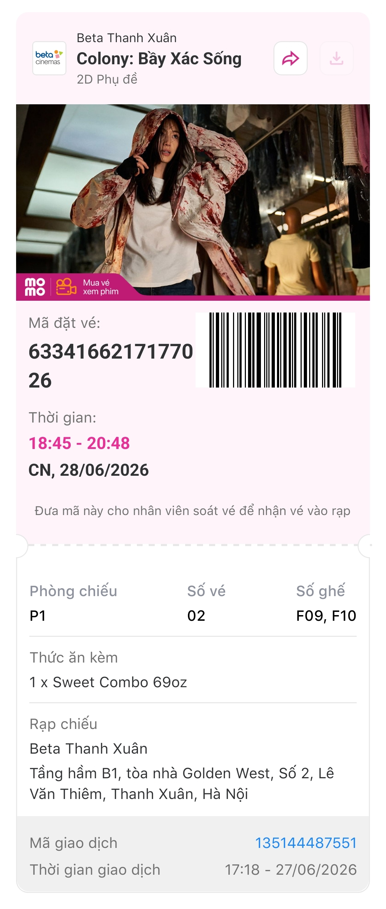
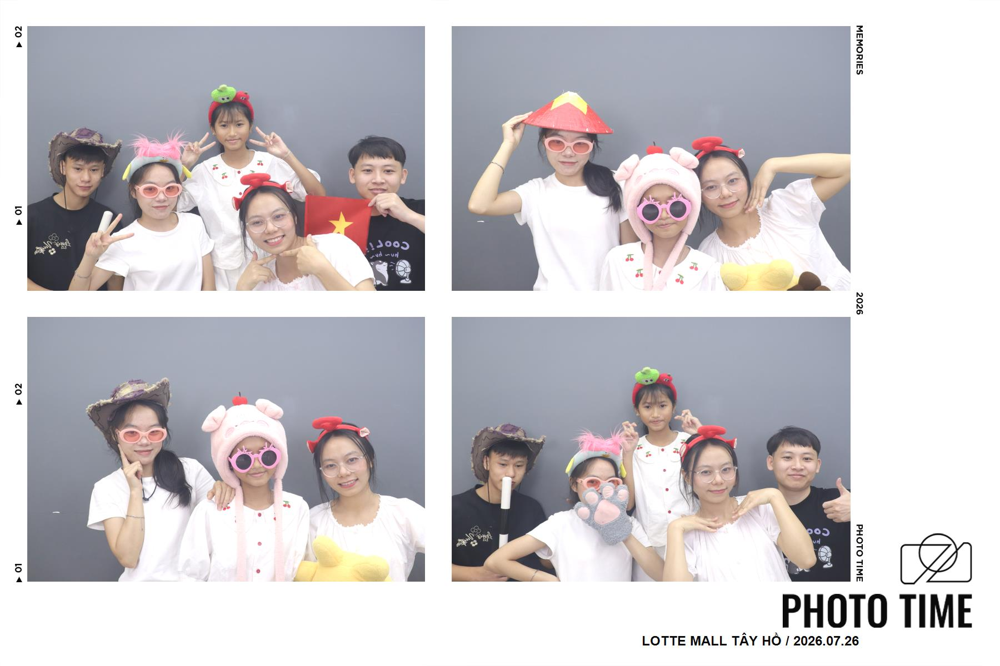

Lần đầu gặp mặt em là m3 tết những phải đến cuối tháng 5 với sự đẩy thuyển mạnh mẽ của anh chị anh mới dám nhắn tin với em.

Lần đầu tiên anh và em có riêng với nhau. Anh đến đón em và mình đã của buổi đi chơi ăn uống ở Aeon mall Hà Đông, thời tiết có chút mưa. Cuối buổi hẹn anh có tặng em 1 món quà nhỏ Một buổi anh không biết sẽ thay đổi mọi thứ từ đó.
Những tháng đầu — hai đứa dần quen với sự hiện diện của nhau, và anh bắt đầu nhận ra rằng em quan trọng hơn anh nghĩ. Anh cũng chưa call với ai lâu đến vậy
Ăn ở Mugi Hàm Nghi rồi cùng nhau xem phim muộn “Bầy Xác Sống” — một buổi chiều bình thường nhưng anh thấy mọi thứ đang trở nên gần gũi hơn.

Cùng nhau đi thăm Bảo tàng Quân sự — ảnh bên xe tăng, xe thiết giáp và những hiện vật chiến tranh. Một ngày lang thang thú vị giữa lòng Hà Nội với Bảo tàng, vincom smart, aeon mall.
Thăm Lăng Bác xong cả đội kéo nhau về Lotte Mall Tây Hồ chụp photo booth — những tấm ảnh vui nhộn và dễ thương nhất của năm 2026.

Buổi chiều 30/7, anh ngồi xuống và bắt đầu viết — 8 trang trong một buổi chiều. Có những điều chỉ có thể nói bằng chữ viết tay, và anh đã viết tất cả về em.
Xem các trang nhật kýNgày 15/8, anh tỏ tình. Em say yes. Từ giây phút đó, mọi thứ trở nên khác hẳn — anh không còn là người bạn đi cùng nữa, mà là người em gọi là của mình. Hai đứa gần nhau và chụp ảnh chung, và theme messenger cũng sẽ không còn là màu trắng ngày thường nữa rồi :v

Bữa ăn phường — Mọi người trong họ biết mặt em trước cả bố mẹ anh :)). Hôm đó anh chị lấy phường có bảo anh lên trước nấu nướng mà phải gần 8h anh mới lên đến nơi. Đến thì đã gặp em nấu nướng trước đó rồi.
Ngày 27/8 — ngày hôm trước buổi hẹn đầu tiên hai đứa. Anh viết xuống mọi thứ anh muốn nói, mọi thứ anh sẽ làm. Vừa hồi hộp vừa mong chờ.

Kế hoạch là ăn Gogi + chơi bowling + uống nước. Nhưng HN đổ mưa bất ngờ, ngập ngõ Duy Tân. Anh đi xe máy gần 1 tiếng mới đến được em — rồi đổi sang The Manor ăn tối, uống nước ở Highland Handisco.
Đọc câu chuyện đầy đủ8h anh đến đón em ở ngã tư Thường, hai đứa đi xe máy qua chỗ chùa Ích Minh chill một lúc, sang Việt Yên uống nước — rồi trên chuyến xe sang Vincom Bắc Ninh, anh mới dám nắm tay em. Xem Spider-Man, đường về có hoàng hôn đẹp.
Đọc câu chuyện đầy đủHẹn nhau ở Royal City, ăn lẩu Thái — ánh đèn đỏ, và hai đứa ngồi đối diện như thể cả thế giới chỉ còn lại hai người.